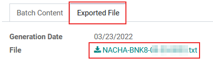

สหรัฐอเมริกา¶
แพ็คเกจการประยุกต์ใช้ทางการเงินของ Odoo สำหรับสหรัฐอเมริกาเป็นไปตามมาตรฐานการบัญชีที่ยอมรับโดยทั่วไป (GAAP) และกฎเกณฑ์ที่ใช้ในการจัดเตรียมงบการเงิน ตามที่กำหนดโดยคณะกรรมการมาตรฐานการบัญชีการเงิน (FASB) และนำมาใช้โดยสำนักงานคณะกรรมการกำกับหลักทรัพย์และตลาดหลักทรัพย์ (SEC)
นอกจากนี้ ยังมีชุดวิดีโอเกี่ยวกับการบัญชีให้รับชมผ่านแพลตฟอร์ม eLearning ของ Odoo วิดีโอเหล่านี้ครอบคลุมถึงวิธีการเริ่มต้นใหม่ทั้งหมด ตั้งค่าคอนฟิก ขั้นตอนการทำงานทั่วไปให้เสร็จสมบูรณ์ และให้ข้อมูลเชิงลึกเกี่ยวกับกรณีการใช้งานเฉพาะบางกรณีเช่นกัน
การกำหนดค่า¶
ด้านล่างนี้คือโมดูลที่มีอยู่ใน Odoo สำหรับการใช้งานด้านบัญชีในสหรัฐอเมริกา
Note
โมดูลที่แสดงด้านล่างนี้มีไว้สำหรับการอ้างอิงเท่านั้นหรือเป็นทางเลือก เนื่องจากข้อกำหนดหลักในการดำเนินการภายใต้การประยุกต์ใช้ทางการเงินของสหรัฐอเมริกาใน Odoo นั้นรวมอยู่ในแพ็คเกจเริ่มต้นที่ติดตั้งมาระหว่างการเริ่มต้นฐานข้อมูลแล้ว
ตรวจสอบว่ามีการใช้งานแพ็คเกจเริ่มต้นโดยไปที่ และภายใต้ การประยุกต์ใช้ทางการเงิน ที่ด้านบน ให้มองหาตัวเลือก เทมเพลตแผนภูมิทั่วไป ที่จะแสดงรายการถัดจาก ป้ายกำกับฟิลด์ แพ็คเกจ เทมเพลตแผนภูมินี้มีการตั้งค่าที่จำเป็นสำหรับการประยุกต์ใช้สำหรับสหรัฐอเมริกาสำหรับแอป Odoo ระบบบัญชี

การติดตั้งโมดูล¶
ติดตั้ง โมดูลต่อไปนี้เพื่อรับฟีเจอร์ทั้งหมดของการประยุกต์ใช้สำหรับสหรัฐอเมริกา:
ชื่อ |
ชื่อทางเทคนิค |
คำอธิบาย |
|---|---|---|
สหรัฐอเมริกา - ระบบบัญชี |
|
โมดูลระบบบัญชีพื้นฐานสำหรับการประยุกต์ใช้สำหรับสหรัฐอเมริกา |
|
เพิ่มรายงานการบัญชีของสหรัฐอเมริกา |
|
รูปแบบเช็คของสหรัฐอเมริกา |
|
ช่วยให้สามารถพิมพ์การชำระเงินบนกระดาษเช็คที่พิมพ์ไว้ล่วงหน้า รองรับรูปแบบเช็คที่พบบ่อยที่สุดสามรูปแบบ และจะใช้งานได้ทันทีด้วยเช็คที่เชื่อมโยงจาก checkdepot.net |
|
ส่งออกการชำระเงินเป็นไฟล์ NACHA เพื่อใช้ในสหรัฐอเมริกา |
|
|
ส่งออกข้อมูล 1099 รายการเพื่อยื่นแบบอิเล็กทรอนิกส์กับบุคคลที่สาม |
|
|
โมดูลสำหรับ การรวม AvaTax กับ Odoo |
|
|
รวมถึงกฎที่จำเป็นสำหรับการจ่ายเงินเดือนของสหรัฐอเมริกา ได้แก่:
|
|
|
มีข้อมูลการบัญชีที่จำเป็นสำหรับกฎการจ่ายเงินเดือนของสหรัฐอเมริกา |
|
|
ส่งออกรายการงานไปยังซอฟต์แวร์บัญชีเงินเดือน ADP |
ผังบัญชี¶
ผังบัญชี (COA) สำหรับการแปลเป็นภาษาท้องถิ่นของสหรัฐอเมริกา ใน Odoo เป็นไปตามมาตรฐาน GAAP โครงสร้างบัญชีโดยจัดกลุ่มบัญชีออกเป็น 7 หมวดหมู่หลัก โดยมีค่าตัวเลขที่สอดคล้องกันซึ่งนำหน้ารายการบันทึกแต่ละรายการ:
ลูกหนี้: ยอดคงเหลือของเงิน (หรือเครดิต) ที่เกิดจากธุรกิจสำหรับสินค้าหรือบริการที่ส่งมอบหรือใช้ แต่ลูกค้ายังไม่ได้ชำระเงิน AR ถูกระบุด้วยรหัสสมุดรายวันที่มีป้ายกำกับ (หรือขึ้นต้น) ด้วย 1
เจ้าหนี้: ภาระผูกพันระยะสั้นของธุรกิจที่เป็นหนี้เจ้าหนี้หรือซัพพลายเออร์ซึ่งยังไม่ได้ชำระ AP ระบุด้วยรหัสสมุดรายวันที่มีป้ายกำกับ (หรือขึ้นต้น) ด้วย 2
ส่วนของผู้ถือหุ้น: จำนวนเงินที่จะคืนให้กับผู้ถือหุ้นของบริษัทหากสินทรัพย์ทั้งหมดถูกชำระบัญชี และหนี้ของบริษัททั้งหมดได้รับการชำระคืนในกรณีของการชำระบัญชี มูลค่าหุ้นจะถูกระบุด้วยรหัสสมุดรายวันที่มีป้ายกำกับ (หรือขึ้นต้น) ด้วย 3 หรือ 9
สินทรัพย์: รายการที่อยู่ในงบดุลที่มีมูลค่าทางเศรษฐกิจหรือมีความสามารถในการสร้างกระแสเงินสดในอนาคต เช่น ชิ้นส่วนเครื่องจักร หลักทรัพย์ทางการเงิน หรือสิทธิบัตร เนื้อหาจะถูกระบุด้วยรหัสสมุดรายวันที่มีป้ายกำกับ (หรือขึ้นต้น) ด้วย 1
หนี้สิน: หมายถึงหนี้สินทางการเงินของบริษัทหรือภาระผูกพันที่เกิดขึ้นระหว่างการดำเนินธุรกิจ หนี้สินจะถูกระบุด้วยรหัสสมุดรายวันที่มีป้ายกำกับ (หรือขึ้นต้น) ด้วย 2
รายได้: มีความหมายเหมือนกันกับ รายได้สุทธิ นี่คือกำไรที่บริษัทคงไว้หลังจากชำระค่าใช้จ่ายที่เกี่ยวข้องทั้งหมดจากรายได้จากการขายที่ได้รับแล้ว รายได้ระบุด้วยรหัสสมุดรายวันที่มีป้ายกำกับ (หรือขึ้นต้น) ด้วย 4 หรือ 6
ค่าใช้จ่าย: ต้นทุนการดำเนินงานที่บริษัทต้องเสียค่าใช้จ่ายเพื่อสร้างรายได้ ค่าใช้จ่ายจะถูกระบุด้วยรหัสสมุดรายวันที่มีป้ายกำกับ (หรือขึ้นต้น) ด้วย 6
Tip
บัญชีที่กำหนดไว้ล่วงหน้าจะรวมอยู่ใน Odoo โดยเป็นส่วนหนึ่งของ CoA ที่ติดตั้งมาพร้อมกับแพ็คเกจการประยุกต์ใช้สำหรับสหรัฐอเมริกา บัญชีที่แสดงด้านล่างได้รับการกำหนดค่าล่วงหน้าเพื่อดำเนินการบางอย่างภายใน Odoo ขอแนะนำ ไม่ให้ ลบบัญชีเหล่านี้ อย่างไรก็ตามหากจำเป็นต้องเปลี่ยนแปลง ให้เปลี่ยนชื่อบัญชีแทน
ประเภท |
ชื่อบัญชี |
|---|---|
สินทรัพย์หมุนเวียน |
บัญชีพักของธนาคาร
ใบเสร็จรับเงินคงค้าง
ยอดค้างชำระ
การโอนสภาพคล่อง
การประเมินมูลค่าหุ้น
หุ้นระหว่างกาล (รับแล้ว)
หุ้นระหว่างกาล (ส่งแล้ว)
ต้นทุนการผลิต
|
รายได้ |
กำไรจากอัตราแลกเปลี่ยนเงินตราต่างประเทศ
กำไรส่วนต่างเงินสด
กำไรจากส่วนลดเงินสด
|
บัญชีรายจ่าย |
ขาดทุนจากส่วนลดเงินสด
ขาดทุนจากอัตราแลกเปลี่ยนเงินตราต่างประเทศ
ขาดทุนจากผลต่างเงินสด
|
รายได้ปีปัจจุบัน |
กำไร/ขาดทุนที่ยังไม่ได้จัดสรร |
ลูกหนี้ |
บัญชีลูกหนี้ |
เจ้าหนี้ |
บัญชีเจ้าหนี้ |
See also
ดู แก้ไข และจัดเรียงบัญชี¶
เข้าถึงแดชบอร์ด ผังบัญชี ใน Odoo โดยไปที่
จากแดชบอร์ด ผังบัญชี ให้สร้างบัญชีใหม่โดยคลิกปุ่ม ใหม่ ที่มุมบนซ้ายของแดชบอร์ดและ กรอกแบบฟอร์มที่เกี่ยวข้อง ค้นหาและจัดเรียงบัญชีที่มีอยู่โดยใช้เกณฑ์ ตัวกรอง และ จัดกลุ่มตาม เฉพาะ ซึ่งมีอยู่ในเมนูแบบเลื่อนลงสำหรับการค้นหา
หากต้องการกรองบัญชีตามหมวดหมู่ ให้คลิกไอคอน (caret down) เพื่อเข้าถึงเมนูแบบเลื่อนลงและดูรายการที่เลือกแต่ละรายการภายใต้คอลัมน์ ตัวกรอง การคลิกที่หมวดหมู่เฉพาะจะแสดงเฉพาะบัญชีที่ตรงกับตัวกรองนั้นเท่านั้น
หากต้องการดูประเภทบัญชีทั้งหมดที่มี ให้ลบตัวกรองทั้งหมดในแถบค้นหา จากนั้นคลิกไอคอน (caret down) เพื่อเข้าถึงเมนูแบบเลื่อนลง จากนั้นเลือก ประเภทบัญชี ภายใต้ส่วนหัวคอลัมน์ จัดกลุ่มตาม เพื่อแสดงรายการประเภทบัญชีทั้งหมดในตาราง

นอกจากโครงสร้างแล้ว ยังมีความแตกต่างที่สำคัญอื่นๆ ในผังบัญชีในสหรัฐอเมริกาเมื่อเปรียบเทียบกับประเทศอื่นๆ:
ข้อมูลเฉพาะ: สหรัฐอเมริกา GAAP มักต้องการบัญชีที่มีรายละเอียดมากกว่าเมื่อเปรียบเทียบกับประเทศอื่นๆ ซึ่งอาจรวมถึงบัญชีแยกต่างหากสำหรับรายได้ ค่าใช้จ่าย และสินทรัพย์ประเภทต่างๆ โดยให้ข้อมูลที่ละเอียดมากขึ้นในรายงานทางการเงิน
ข้อกำหนดด้านกฎระเบียบ: ในสหรัฐอเมริกา มีข้อกำหนดด้านกฎระเบียบเฉพาะที่กำหนดโดยหน่วยงานต่างๆ เช่น SEC สำหรับบริษัทมหาชน ข้อกำหนดเหล่านี้อาจส่งผลต่อโครงสร้างและเนื้อหาของ CoA เพื่อให้เป็นไปตามมาตรฐานการรายงาน
แนวทางปฏิบัติทางอุตสาหกรรม: อุตสาหกรรมบางประเภทในสหรัฐอเมริกาอาจมีข้อกำหนดทางบัญชีที่ไม่ซ้ำกันหรือ CoA เฉพาะทาง โครงสร้าง ตัวอย่างเช่น สถาบันการเงินมักมีบัญชีเฉพาะที่เกี่ยวข้องกับสินเชื่อ การลงทุน และรายได้ดอกเบี้ย
การพิจารณาด้านภาษี: CoA ยังอาจสะท้อนถึงการพิจารณาภาษี เช่น บัญชีสำหรับค่าใช้จ่ายหักลดหย่อน สินทรัพย์ภาษีเงินได้รอการตัดบัญชี และหนี้สิน เพื่อให้มั่นใจว่าเป็นไปตามกฎหมายภาษีและอำนวยความสะดวกในการรายงานภาษี
ในที่สุดความแตกต่างเหล่านี้ควรสะท้อนให้เห็นใน CoA โครงสร้างตัวเองด้วยการเพิ่มบัญชีใหม่ตามความจำเป็น เพื่อตอบสนองความต้องการของข้อกำหนดการรายงานทางบัญชีของสหรัฐอเมริกา
ภาษี¶
ในสหรัฐอเมริกา อัตราภาษีและสิ่งที่ถือว่าต้องเสียภาษีจะแตกต่างกันไปตามเขตอำนาจศาล ภาษี การขาย และ การซื้อ เริ่มต้นจะถูกสร้างขึ้นโดยอัตโนมัติเมื่อติดตั้งแอปพลิเคชัน Odoo ระบบบัญชี หากต้องการจัดการภาษีที่มีอยู่หรือกำหนดค่าภาษีเพิ่มเติม ให้ไปที่
AvaTax¶
Avalara AvaTax เป็นซอฟต์แวร์คำนวณภาษีและปฏิบัติตามกฎหมายบนคลาวด์ที่รวมระบบกับ Odoo สำหรับการประยุกต์ใช้หลายประเทศ การรวม AvaTax เข้ากับ Odoo ช่วยให้คำนวณภาษีแบบเรียลไทม์และเฉพาะภูมิภาคได้เมื่อมีการขาย ซื้อ และออกใบแจ้งหนี้สินค้าในฐานข้อมูล
Important
AvaTax สามารถทำงานร่วมกับฐานข้อมูล/บริษัทต่างๆ ที่มีสถานที่ตั้งในสหรัฐอเมริกาและแคนาดาได้ โปรดดูข้อมูลเพิ่มเติมในเอกสาร ประเทศการเงิน
See also
โปรดดูบทความเอกสารด้านล่างเพื่อผสานรวมและกำหนดค่าบัญชี AvaTax กับฐานข้อมูล Odoo:
รายงาน¶
ตัวเลือกรายงาน จำนวนมากพร้อมใช้งานสำหรับการแปลแบบสหรัฐอเมริกา ภายใต้เมนูแบบเลื่อนลง :
Balance Sheet: a "snapshot" of a company's financial position at a specific point in time, which contains an overview of a company's assets, liabilities, and equity.
กำไรและขาดทุน: หรือที่เรียกว่า งบ P&L หรือ งบกำไรขาดทุน ให้ข้อมูลสรุปเกี่ยวกับรายได้ ค่าใช้จ่าย และกำไร/ขาดทุนของบริษัทในช่วงเวลาที่กำหนด ของเวลา
งบกระแสเงินสด: แสดงจำนวนเงินสดและรายการเทียบเท่าเงินสดที่บริษัทได้รับและใช้ไปในช่วงเวลาที่กำหนด
บทสรุปผู้บริหาร: รายงานภาพรวมที่ครอบคลุมตัวชี้วัดผลการดำเนินงานที่สำคัญของสถานะทางการเงินของบริษัท เช่น รายได้ กำไร และหนี้สิน
รายงานภาษี: แบบฟอร์มอย่างเป็นทางการที่ยื่นต่อหน่วยงานภาษีเพื่อรายงานรายได้ ค่าใช้จ่าย และข้อมูลภาษีที่เกี่ยวข้องอื่นๆ รายงานภาษีช่วยให้ผู้เสียภาษีสามารถคำนวณภาระภาษี กำหนดเวลาชำระภาษี หรือขอคืนเงินภาษีที่ชำระเกินได้ ใน Odoo สามารถสร้างรายงานภาษีได้ทุกเดือน ทุกสองเดือน ทุกไตรมาส ทุกสี่เดือน ทุกครึ่งปี และทุกปี
ตรวจสอบการลงทะเบียน: รายงานที่แสดงธุรกรรมเงินสด (โดยพิจารณาถึงสมุดรายวัน) พร้อมด้วยยอดคงเหลือหลังการทำธุรกรรม มองเห็นได้เฉพาะเมื่อติดตั้งโมดูล สหรัฐอเมริกา - รายงานทางบัญชี (
l10n_us_reports) เท่านั้นรายงาน 1099: การดาวน์โหลดไฟล์ CSV ของการชำระเงินให้กับผู้ที่ไม่ใช่พนักงานในช่วงเวลาที่จะยื่นทางอิเล็กทรอนิกส์ในบริการของบุคคลที่สาม มองเห็นได้เมื่อติดตั้งโมดูล รายงาน 1099 (
l10n_us_1099) เท่านั้น
ตัวกรองบางอย่างมีอยู่ที่ด้านบนของแดชบอร์ด ทั้งนี้ขึ้นอยู่กับประเภทของรายงาน:
ตัวกรอง วันที่ ระบุด้วยไอคอน (ปฏิทิน) ที่อยู่หน้าวันที่ในรูปแบบ MM/DD/YYYY ใช้ตัวเลือกนี้เพื่อเลือกวันที่หรือช่วงวันที่เฉพาะสำหรับรายงาน
ตัวกรอง เปรียบเทียบ เพื่อเปรียบเทียบช่วงเวลาการรายงานซึ่งกันและกัน
ตัวกรอง สมุดรายวัน ตามที่ระบุโดยไอคอน (book) และการตั้งค่าเริ่มต้นของ สมุดรายวันทั้งหมด ใช้ตัวกรองนี้เพื่อระบุสมุดรายวันที่ควรรวมไว้ในรายงาน
ตัวกรอง ประเภทรายการ ตามที่ระบุโดยไอคอน (ตัวกรอง) โดยมีการตั้งค่าเริ่มต้นเป็น รายการที่โพสต์เท่านั้น เกณฑ์คงค้าง ใช้ตัวกรองนี้เพื่อกำหนดประเภทรายการบันทึกรายวันที่ควรรวมไว้ในรายงาน (เช่น การผ่านรายการหรือแบบร่าง) พร้อมด้วยประเภทของวิธีการบัญชี (เช่น ยอดคงค้างหรือเกณฑ์เงินสด)
มีตัวเลือกมุมมองในตัวกรองนี้ เช่นเดียวกับตัวเลือกที่จะ ซ่อนบรรทัดที่ 0 เพื่อการดูที่เกี่ยวข้องมากขึ้น พร้อมด้วยตัวเลือก แบ่งตามแนวนอน เพื่อเก็บรายงานไว้เหนือครึ่งหน้าของหน้าจอ โดยไม่ต้องเลื่อนอีกต่อไป

ตัวกรอง ทศนิยม ซึ่งตามค่าเริ่มต้นจะรวมตัวเลขที่มีหน่วยเป็นเซนต์ ตามที่ระบุโดย ในการตั้งค่า .$ ใช้ตัวเลือกอื่นๆ ในเมนูแบบเลื่อนลงเพื่อเปลี่ยนตัวเลขในรายงานเป็นจำนวนเต็ม (ใน $), พัน (ใน K$) หรือล้าน (ใน M $) รูปแบบ
รายงาน การปรับแต่ง ตัวกรอง ซึ่งระบุด้วยไอคอน (gears) ใช้ตัวกรองนี้เพื่อปรับแต่งส่วนและรายการบรรทัดของรายงานปัจจุบัน หรือสร้างรายงานใหม่ตามต้องการ
รายงาน 1099¶
รายงาน 1099 พร้อมใช้งานโดย การติดตั้ง โมดูล รายงาน 1099 (l10n_us_1099) รวมถึงการชำระเงินที่จ่ายให้กับผู้ที่ไม่ใช่พนักงานตลอดระยะเวลาการรายงานที่กำหนด ใช้ไฟล์ CSV ที่ดาวน์โหลดได้จากรายงานใน Odoo เพื่อยื่นการชำระเงิน 1,099 รายการทางอิเล็กทรอนิกส์ผ่านบริการของบุคคลที่สาม
หากต้องการสร้างรายงาน 1099 ให้ไปที่ เพื่อเปิดตัวช่วยสร้าง รายงาน 1099
ขั้นแรก ป้อนช่วงวันที่ของธุรกรรมที่จะรายงานในช่อง วันที่เริ่มต้น และ วันที่สิ้นสุด
จากนั้น แก้ไขรายการบันทึกประจำวันที่ปรากฏบนตัวช่วยสร้าง คลิก เพิ่มบรรทัด เพื่อเพิ่มรายการที่ขาดหายไป อย่าลืมลบรายการที่ไม่ควรรวมไว้ในรายงานโดยคลิก (ลบ) ในแถว
สุดท้าย เมื่อรายการที่จำเป็นทั้งหมดรวมอยู่ในรายงาน 1099 แล้ว ให้คลิกที่ปุ่ม สร้าง เพื่อดาวน์โหลดไฟล์ CSV ที่จัดกลุ่มธุรกรรมตามพาร์ทเนอร์ที่ได้รับการชำระเงิน
งบกระแสเงินสด¶
ไปที่แดชบอร์ด งบกระแสเงินสด (CFS) โดยไปที่ จากที่นี่ CFS สามารถสร้างรายงานได้โดยใช้ filters ต่างๆ ที่มีอยู่ที่ด้านบนของแดชบอร์ด
Odoo ใช้วิธีการกระแสเงินสด โดยตรง ในการรวบรวมงบกระแสเงินสด ซึ่งวัดกระแสเงินสดเข้าและไหลออกจริงจากการดำเนินงานของบริษัท เช่น เมื่อได้รับเงินสดจากลูกค้า หรือเมื่อชำระเงินสดให้กับซัพพลายเออร์
ตามค่าเริ่มต้น บัญชีที่มีป้ายกำกับด้วยค่าเริ่มต้น แท็ก บนแดชบอร์ด ผังบัญชี จะถูกรวมไว้ในรายงาน ซึ่งรวมถึง: กิจกรรมการดำเนินงาน, :guilabel: กิจกรรมทางการเงิน และ การลงทุนและกิจกรรมพิเศษ
นอกจากนี้ งบกระแสเงินสดใน Odoo:
จำกัดเฉพาะสมุดรายวัน ธนาคาร และ เงินสด เพื่อสะท้อนถึงเงินเข้าหรือออก และ
ยังมีบัญชี ค่าใช้จ่าย เพื่อแสดงธุรกรรมคู่กันเทียบกับรายการสมุดรายวัน ธนาคาร หรือ เงินสด โดยไม่รวมกิจกรรมของ AR และ AP
Example
สร้างใบเรียกเก็บเงินของผู้จัดจำหน่ายจำนวน 100 เหรียญสหรัฐฯ เป็นค่าใช้จ่ายในการดำเนินงาน (ไม่ใช่ AP) การทำเช่นนี้จะ ไม่ สะท้อนถึงธุรกรรมในงบกระแสเงินสด อย่างไรก็ตาม ให้ลงทะเบียนการชำระเงินที่เกี่ยวข้องเป็นจำนวน $100 และธุรกรรมจะ สะท้อน ให้เห็นในงบกระแสเงินสดเป็น เงินสดที่จ่ายสำหรับกิจกรรมการดำเนินงาน

ส่วนลดเงินสด¶
สามารถกำหนดค่าส่วนลดเงินสดได้จาก สามารถกำหนดเงื่อนไขการชำระเงินแต่ละรายการได้ด้วยส่วนลดเงินสดและภาษีที่ลดลง
See also
การเขียนเช็ค¶
การใช้เช็คยังคงเป็นวิธีการชำระเงินทั่วไปในสหรัฐอเมริกา ตรวจสอบให้แน่ใจว่าโมดูล US Checks Layout (l10n_us_check_printing) สำหรับการประยุกต์ใช้สำหรับสหรัฐอเมริกาคือ installed
หากต้องการเปิดใช้งานการพิมพ์เช็คจาก Odoo ให้ไปที่ และค้นหาส่วน การชำระเงินของผู้ขาย จากที่นี่ ทำเครื่องหมายที่ช่อง เช็ค เพื่อแสดงช่องต่างๆ สำหรับการกำหนดค่าการตรวจสอบ
เลือก ตรวจสอบเค้าโครง จากเมนูแบบเลื่อนลง:
พิมพ์เช็ค (บน) - US
พิมพ์เช็ค (กลาง) - US
พิมพ์เช็ค (ล่าง) - US
จากนั้นเลือกว่าจะเปิดใช้งานช่องทำเครื่องหมาย Stub ตรวจสอบหลายหน้า หรือไม่
คุณสามารถเลือกตั้งค่า ตรวจสอบระยะขอบด้านบน และ ตรวจสอบระยะขอบด้านซ้าย หากจำเป็น
เมื่อการกำหนดค่าการตรวจสอบทั้งหมดเสร็จสิ้น บันทึก การตั้งค่า
Tip
รูปแบบเช็คบางรูปแบบอาจต้องใช้กระดาษที่พิมพ์ไว้ล่วงหน้าจากผู้ขายบุคคลที่สาม แนะนำให้ใช้ https://checkdepot.net/collections/odoo-checks
See also
เงินเดือน¶
แอปพลิเคชัน บัญชีเงินเดือน มีหน้าที่คำนวณค่าจ้างของพนักงาน โดยคำนึงถึงงาน วันหยุด วันลาป่วย สิทธิประโยชน์ และการหักเงินทั้งหมด แอป บัญชีเงินเดือน ดึงข้อมูลจากแอปพลิเคชัน ระบบลงเวลา, ระบบบันทึกเวลา, ระบบการลา, ข้อมูลพนักงาน และ บัญชีรายจ่าย เพื่อคำนวณชั่วโมงทำงานและค่าตอบแทนสำหรับพนักงานแต่ละคน
เมื่อใช้ผู้ให้บริการบัญชีเงินเดือนภายนอก เช่น ADP จำเป็นต้องส่งออกข้อมูลต่างๆ ที่เกี่ยวข้องกับบัญชีเงินเดือน เช่น รายการงาน การชำระค่าใช้จ่าย ภาษี ค่าคอมมิชชั่น และข้อมูลอื่นๆ ที่เกี่ยวข้อง เพื่อให้สามารถอัปโหลดข้อมูลได้ ไปยังผู้ให้บริการบัญชีเงินเดือนซึ่งจะออกเช็คเงินเดือนตามจริงหรือฝากเงินเข้าบัญชีธนาคารของพนักงานโดยตรง
ในการส่งออกข้อมูลเงินเดือน รายการงานจะต้องได้รับการตรวจสอบและแก้ไขก่อน โปรดดูเอกสาร การเข้างาน สำหรับข้อมูลเพิ่มเติมเกี่ยวกับการตรวจสอบความถูกต้องของรายการงาน
เมื่อรายการงานได้รับการตรวจสอบแล้ว ข้อมูลจะสามารถ ส่งออกไปยัง ADP ได้
หลังจากออกการชำระเงินให้กับพนักงานแล้ว คุณสามารถประมวลผลสลิปเงินเดือนเป็นชุด ตรวจสอบความถูกต้อง และโพสต์ลงในสมุดรายวันการบัญชีที่เกี่ยวข้องเพื่อเก็บบันทึกทางการเงินทั้งหมดใน Odoo ให้มีการอัปเดตล่าสุด
ข้อมูลที่จำเป็น¶
สิ่งสำคัญคือต้องติดตั้งแอปพลิเคชัน ข้อมูลพนักงาน และกรอกข้อมูลพนักงานทั้งหมด หลายช่องใน ข้อมูลพนักงาน และรวมถึงใน สัญญาพนักงาน จำเป็นต่อการประมวลผลอย่างเหมาะสม ค่าจ้างพนักงาน ตรวจสอบให้แน่ใจว่าได้กรอกข้อมูลในช่องต่อไปนี้ในตำแหน่งที่เกี่ยวข้อง
ข้อมูลพนักงาน¶
ในข้อมูลของพนักงานแต่ละคน มีข้อมูลต่างๆ ที่แอปพลิเคชัน บัญชีเงินเดือน ต้องใช้เพื่อประมวลผลสลิปเงินเดือนอย่างเหมาะสม รวมถึงข้อมูลธนาคาร ภาษี และข้อมูลการทำงานต่างๆ
ไปที่ และเลือกบันทึกพนักงานเพื่อดูส่วนของแบบฟอร์มพนักงานที่ส่งผลโดยตรงต่อ บัญชีเงินเดือน:
Work Information tab:
ที่อยู่ที่ทำงาน: ระบุตำแหน่งของพนักงาน รวมถึงรัฐ ซึ่งส่งผลต่อการคำนวณภาษี
ชั่วโมงทำงาน: กำหนดวิธีคำนวณค่าจ้าง และกำหนดว่าพนักงานจะได้ค่าล่วงเวลาหรือไม่
Private Information tab:
หมายเลข SSN: หมายเลขสี่หลักสุดท้ายของหมายเลขประกันสังคม (SSN) ของพนักงานปรากฏบนสลิปเงินเดือน
หมายเลขบัญชีธนาคาร: บัญชีธนาคารที่เชื่อมโยงกับไฟล์การชำระเงินของ NACHA
HR Settings tab:
สถานะการยื่นภาษีรัฐและจังหวัด: สถานะภาษีที่พนักงานใช้สำหรับการคำนวณภาษีเงินเดือน ซึ่งอาจแตกต่างจากสถานะของรัฐ
สถานะการยื่นภาษีรัฐ: สถานะภาษีที่พนักงานใช้สำหรับการคำนวณภาษีเงินเดือนตามส่วนของรัฐ
แบบฟอร์ม W-2: แบบฟอร์มภาษีของสหรัฐอเมริกาที่ระบุสรุปค่าจ้าง ภาษี และผลประโยชน์ที่จ่ายให้กับพนักงานในช่วงระยะเวลาภาษี (โดยทั่วไปคือหนึ่งปี)
แบบฟอร์ม W-4: แบบฟอร์ม IRS ที่ช่วยสรุปจำนวนภาษีของรัฐและจังหวัดที่ต้องหัก ณ ที่จ่ายสำหรับพนักงาน ซึ่งบริษัทจะจ่ายให้กับ IRS
สัญญาจ้างพนักงาน¶
นอกจากนี้ยังมีข้อมูลที่พบในสัญญาพนักงานซึ่งส่งผลต่อแอปพลิเคชัน บัญชีเงินเดือน ด้วย
ไปที่ และเลือกบันทึกสัญญาเพื่อดูส่วนของสัญญาที่ส่งผลโดยตรงต่อ บัญชีเงินเดือน:
ข้อมูลทั่วไป:
ประเภทโครงสร้างเงินเดือน: สหรัฐอเมริกา: พนักงาน: กำหนดเวลาที่พนักงานจะได้รับเงิน ตารางการทำงาน และประเภทการเข้างาน
แหล่งที่มาของรายการงาน: กำหนดวิธีการคำนวณรายการงาน
แท็บข้อมูลเงินเดือน:
หมายเลข SSN: หมายเลขสี่หลักสุดท้ายของหมายเลขประกันสังคม (SSN) ของพนักงานปรากฏบนสลิปเงินเดือน
ประเภทค่าจ้าง: กำหนดวิธีการจ่ายเงินของพนักงาน ไม่ว่าจะเป็นค่าจ้างคงที่ (เงินเดือน) หรือค่าจ้างรายชั่วโมง
กำหนดการชำระเงิน: กำหนดความถี่ที่พนักงานจะได้รับเงิน เช่น รายปี, รายครึ่งปี, รายไตรมาส, รายสองเดือน, : guilabel:
รายเดือน, รายครึ่งเดือน, รายสองสัปดาห์, รายสัปดาห์ หรือ รายวัน ในสหรัฐอเมริกา รายครึ่งเดือน (24 งวดต่อปี) หรือรายสองสัปดาห์ (26 งวดต่อปี) เป็นเรื่องธรรมดาที่สุดต้นทุนค่าจ้าง รายปี และรายเดือน: ใช้เพื่อแสดงต้นทุนรวมของพนักงาน ขอแนะนำให้เติมข้อมูลค่าจ้าง รายปี ก่อน เนื่องจากระบบจะเติมข้อมูลในฟิลด์อื่นๆ โดยอัตโนมัติ
สิทธิประโยชน์ก่อนหักภาษี: เติมส่วนนี้ตามการเลือกของพนักงาน สิทธิประโยชน์ก่อนหักภาษีจะลดค่าจ้างรวม ซึ่งจะทำให้จำนวนเงินพื้นฐานที่ต้องเสียภาษีลดลง สิ่งเหล่านี้จะแสดงอยู่ที่จุดเริ่มต้นของสลิปเงินเดือน
สิทธิประโยชน์หลังหักภาษี: สิทธิประโยชน์เหล่านี้เป็นการหักเงิน หลังจาก คำนวณภาษีแล้ว สิ่งเหล่านี้จะปรากฏที่ส่วนท้ายของสลิปเงินเดือนก่อนที่จะแสดงจำนวนเงินสุทธิ
See also
ส่งออกรายการงานไปยัง ADP¶
ข้อกำหนด¶
ในการสร้างรายงานที่สามารถอัปโหลดไปยัง ADP ได้ มีขั้นตอนการกำหนดค่าเริ่มต้นบางอย่างที่ต้องดำเนินการให้เสร็จสิ้นก่อน
ขั้นแรก ตรวจสอบให้แน่ใจว่าโมดูล สหรัฐอเมริกา - บัญชีเงินเดือน - ส่งออกไปยัง ADP (l10n_us_hr_payroll_adp) นั้นได้ ติดตั้งแล้ว
จากนั้นบริษัทจะ ต้อง มี รหัส ADP ป้อนในการตั้งค่าบริษัท โดยไปที่ ป้อน รหัส ADP ในส่วน การประยุกต์ใช้สำหรับสหรัฐอเมริกา
ถัดไป ประเภทรายการงานจะ ต้อง มีรหัส ADP ที่ถูกต้องซึ่งแสดงรายการอยู่ในฟิลด์ รหัสภายนอก สำหรับประเภทรายการงานแต่ละประเภทที่ถูกอ้างอิง
สุดท้ายนี้ พนักงานทุกคนจะ ต้อง มี รหัส ADP ที่กรอกในแบบฟอร์มพนักงานของพวกเขา โดยไปที่ เลือกบันทึกพนักงาน และเปิดแท็บ การตั้งค่า HR ป้อน รหัส ADP ในส่วน ข้อมูล ADP
รหัส ADP คือวิธีที่ ADP ระบุพนักงานคนนั้น และโดยทั่วไปจะเป็นตัวเลขหกหลัก
See also
ส่งออกข้อมูล¶
เมื่อ การเข้างาน ได้รับการยืนยันแล้ว ข้อมูลจะสามารถส่งออกเป็นไฟล์ CSV ซึ่งสามารถอัปโหลดไปยัง ADP ได้
หากต้องการส่งออกข้อมูล ให้ไปที่ จากนั้นคลิก สร้าง จากนั้น ป้อน วันที่เริ่มต้น และ วันที่สิ้นสุด สำหรับรายการงานโดยใช้ป๊อปโอเวอร์ปฏิทิน
จากนั้น ป้อน รหัสชุดงาน ในช่องที่เกี่ยวข้อง คำแนะนำสำหรับฟิลด์นี้คือการป้อนวันที่ในรูปแบบ YY-MM-DD ตามด้วยอักขระอื่นๆ เพื่อแยกแยะแบทช์เฉพาะนั้น เช่น ชื่อแผนก หรือคุณลักษณะที่กำหนดอื่นๆ สำหรับแบทช์
ป้อน คำอธิบายแบทช์ ในช่องที่เกี่ยวข้อง ควรสั้นและสื่อความหมาย แต่แตกต่างจาก ชื่อแบทช์
ตรวจสอบให้แน่ใจว่าบริษัทที่ถูกต้องกรอกข้อมูลในช่อง บริษัท เปลี่ยนบริษัทที่เลือกด้วยเมนูแบบเลื่อนลง หากจำเป็น
สุดท้าย เพิ่มข้อมูลการเข้างานของพนักงานลงในรายการ คลิก เพิ่มบรรทัด และหน้าต่างป๊อปอัป เพิ่ม: พนักงาน จะโหลดขึ้น รายการสามารถเป็น ตัวกรอง เพื่อให้ค้นหาพนักงานที่จะเพิ่มลงในรายการได้ง่ายขึ้น
Tip
ประมวลผลการส่งออกข้อมูลในหลายกลุ่มแทนที่จะเป็นกลุ่มใหญ่กลุ่มเดียวที่มีพนักงานทั้งหมด สิ่งนี้ช่วยแยกแยะความแตกต่างระหว่างแบทช์ได้อย่างมีความหมาย และทำให้การประมวลผลโดยรวมน่าเชื่อถือมากขึ้น วิธีที่พบบ่อยที่สุดในการจัดกลุ่มพนักงานคือตามแผนก หรือตามประเภทค่าจ้าง (รายชั่วโมงหรือเงินเดือน)
เลือกพนักงานที่จะเพิ่มลงในรายชื่อโดยทำเครื่องหมายที่ช่องด้านซ้ายของชื่อ เมื่อเลือกพนักงานที่ต้องการทั้งหมดแล้ว ให้คลิกปุ่ม เลือก ที่มุมซ้ายล่าง และพนักงานจะปรากฏในรายการ
หากต้องการสร้างไฟล์ CSV ให้คลิกปุ่ม สร้าง ที่มุมซ้ายบน
ACH - การโอนทางอิเล็กทรอนิกส์¶
การชำระเงินของสำนักหักบัญชีอัตโนมัติ (ACH) เป็นวิธีสมัยใหม่ในการโอนเงินทางอิเล็กทรอนิกส์ระหว่างบัญชีธนาคาร แทนที่วิธีการที่ใช้กระดาษแบบเดิม ACH โดยทั่วไปการชำระเงินจะใช้สำหรับการฝากโดยตรง ชำระบิล และธุรกรรมทางธุรกิจ
รับการชำระเงิน ACH: การรวมผู้ให้บริการการชำระเงิน¶
|เอซีเอช| การชำระเงินได้รับการสนับสนุนโดยการผสานรวมการชำระเงิน Authorize.net และ Stripe ใน Odoo
ส่งการชำระเงิน: ไฟล์ NACHA¶
Odoo สามารถสร้าง National Automated Clearing House Association (NACHA) ที่เข้ากันได้กับ ACH ไฟล์เพื่อส่งไปยังธนาคารของบริษัท สำหรับสมุดรายวัน ธนาคาร แต่ละรายการที่บริษัทประสงค์จะชำระเงินให้ผู้ขาย NACHA ส่วนการกำหนดค่าจะต้องกรอกในฐานข้อมูล Odoo
การกำหนดค่า¶
ขั้นแรก ไปที่ เปิดสมุดรายวันธนาคารและคลิกเข้าไปในแท็บ การชำระเงินขาออก

Note
โดยปกติแล้วข้อมูลการกำหนดค่า NACHA จะได้รับจากสถาบันการเงินของบริษัทเมื่อได้รับการอนุมัติให้ส่งการชำระเงินผ่านบัญชีของพวกเขา
ใต้ส่วนที่ระบุว่า การกำหนดค่า NACHA คือฟิลด์ที่จำเป็นในการสร้าง NACHA ที่เข้ากันได้กับ ACH ไฟล์เพื่อส่งไปยังธนาคารของบริษัท ขั้นแรก ป้อนหมายเลขเส้นทางของสถาบันการเงินในช่องที่มีป้ายกำกับ ปลายทางทันที ข้อมูลนี้หาได้ทั่วไปบนอินเทอร์เน็ต และโดยทั่วไปจะแตกต่างกันไปตามสถานที่ตั้งของธนาคาร โดยปกติหมายเลขนี้จะให้ไว้ระหว่างการตั้งค่าบัญชีครั้งแรก
จากนั้น ป้อนชื่อที่ลงทะเบียนของสถาบันการเงินในช่องชื่อ ปลายทาง ข้อมูลนี้จะได้รับจากธนาคารหรือสหพันธ์เครดิต
ถัดจากฟิลด์ ปลายทาง จะเป็นฟิลด์ แหล่งที่มาทันที ป้อนรหัสบริษัท 9 หลักหรือหมายเลขประจำตัวนายจ้าง (EIN) ลงในช่องนี้ ข้อมูลนี้จัดทำโดยสถาบันการเงิน
จากนั้น ป้อน หมายเลขประจำตัวบริษัท ซึ่งเป็นตัวเลข 10 หลักที่เกิดจากการรวมรหัสบริษัท 9 หลักหรือหมายเลขประจำตัวนายจ้าง (EIN) พร้อมด้วยหมายเลขเพิ่มเติมที่จุดเริ่มต้นของลำดับ หมายเลขนี้มักจะเป็น "1" ตรวจสอบกับสถาบันการเงินหากตัวเลขแรกนี้แตกต่างออกไปเพื่อยืนยันว่าถูกต้อง เนื่องจากหมายเลขนี้ระบุไว้สำหรับ ACH บัญชีที่ได้รับอนุมัติ
ป้อน หมายเลขประจำตัว DFI ต้นทาง ถัดไป ซึ่งควรประกอบด้วยหมายเลข 8 หลักที่กำหนดจากสถาบันการเงิน
Important
ป้อนค่าตัวเลขในส่วนนี้ ให้ตรงตาม ที่สถาบันการเงินของบริษัท (เช่น ธนาคารหรือสหพันธ์เครดิตยูเนี่ยน) ระบุไว้ ไม่เช่นนั้นอาจเสี่ยงต่อความล้มเหลว NACHA การกำหนดค่าใน Odoo

มีสองตัวเลือกสำหรับฟิลด์ถัดไป: รหัสชั้นรายการมาตรฐาน เลือกเมนูแบบเลื่อนลงทางด้านขวาของช่อง และเลือก Corporate Credit or Debit (CCD) หรือ Prearranged Payment and Deposit (PPD) ข้อมูลนี้จะถูกจัดเตรียมโดยสถาบันการเงินอีกครั้ง โดยค่าเริ่มต้น Corporate Credit or Debit (CCD) ถูกเลือกไว้
สุดท้าย ตัวเลือกสุดท้ายคือ สร้างไฟล์ที่สมดุล ทำเครื่องหมายที่ช่องทางด้านขวาของช่องเพื่อเปิดใช้งาน สร้างไฟล์ที่สมดุล ปรึกษานักบัญชีหรือที่ปรึกษาทางการเงินของบริษัทเพื่อประกอบการตัดสินใจในด้านนี้
บันทึกการกำหนดค่าด้วยตนเองโดยคลิกที่ไอคอน (อัปโหลดบนคลาวด์) หรือออกจากหน้าจอนี้เพื่อบันทึกอัตโนมัติ การกำหนดค่าเสร็จสมบูรณ์แล้ว
สร้างการชำระเงินเป็นกลุ่ม¶
ตอนนี้ ให้บันทึกการชำระเงินแต่ละครั้งใน Odoo โดยใช้ NACHA วิธีการชำระเงิน
See also
Important
ระวังเวลาตัดยอดสำหรับการชำระเงินในวันเดียวกัน ไฟล์จะต้องมีวันที่ในอนาคตที่เกี่ยวข้องกับการชำระเงินแต่ละครั้ง หรือต้องส่งไฟล์ก่อนการตัดยอด หากวันที่ที่รวมอยู่ในนั้นตรงกับวันที่ปัจจุบัน ปรึกษาสถาบันการเงินเกี่ยวกับเวลาตัดยอดที่แน่นอนสำหรับการประมวลผลการชำระเงินในวันเดียวกัน
เมื่อการชำระเงินทั้งหมดจะรวมอยู่ในไฟล์ NACHA ACH ถูกสร้างขึ้นแล้ว โดยจะต้องชำระเงินเป็นชุดจากเมนู ดำเนินการ
หากต้องการสร้างการชำระเงินเป็นชุด ให้เข้าไปที่หน้าการชำระเงิน โดยไปที่ เลือกการชำระเงินทั้งหมดที่ควรรวมอยู่ในไฟล์ NACHA ACH โดยทำเครื่องหมายที่ช่องทำเครื่องหมายทางด้านซ้ายสุดของแถว

Important
การชำระเงินทั้งหมดในกลุ่ม จำเป็นต้อง ใช้ช่องทางการชำระเงิน NACHA เดียวกัน
ถัดไป นำทางไปยังการชำระเงินเป็นชุด () คลิกไปที่การชำระเงินที่เพิ่งสร้างขึ้น จากนั้นคลิกเข้าไปในแท็บ ไฟล์ที่ส่งออก ไฟล์ที่สร้างขึ้นจะแสดงรายการโดยมี วันที่สร้าง คลิกปุ่ม (ดาวน์โหลด) เพื่อดาวน์โหลดไฟล์
หากจำเป็นต้องปรับเปลี่ยนใดๆ ให้คลิกปุ่ม สร้างไฟล์ส่งออกใหม่ เพื่อสร้างไฟล์ NACHA ACH ใหม่